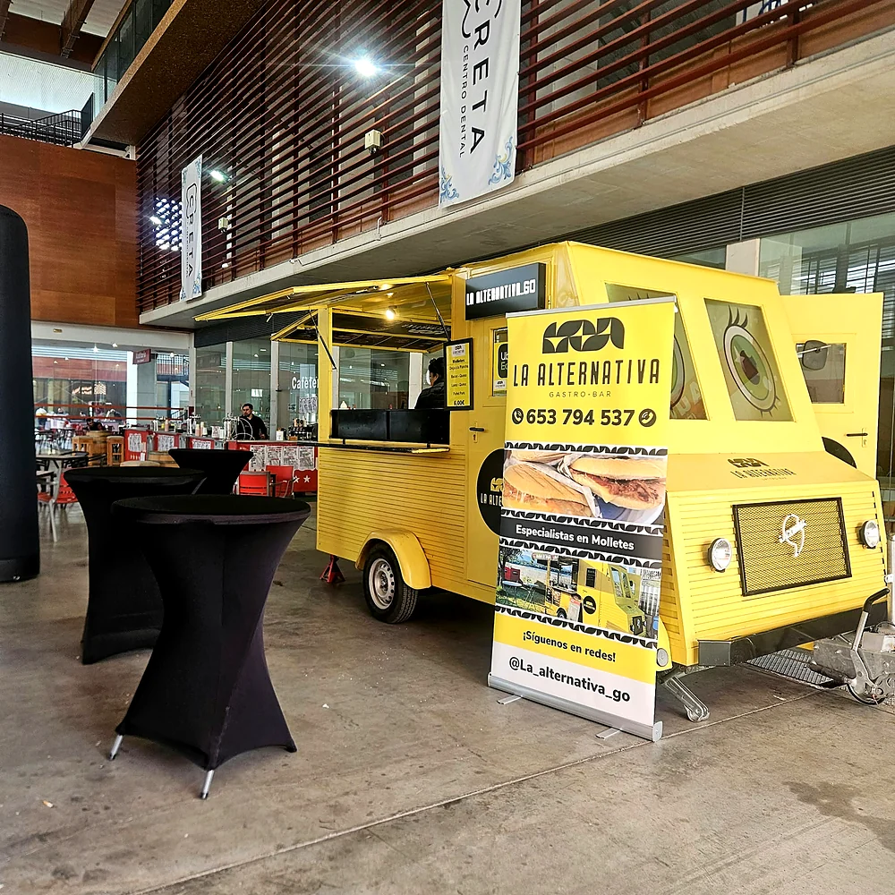

Montaje y cocina
Llegamos, montamos y cocinamos en directo.
- Montaje y desmontaje incluidos
- Cocina propia dentro de la foodtruck
- Nos adaptamos al espacio disponible

Alquiler de foodtruck
Llevamos nuestra foodtruck a tu evento en Talavera de la Reina y la provincia de Toledo, montada, con cocina propia y personal de servicio. Street food recién hecha para cumpleaños, fiestas, festivales y fiestas populares.
Tu evento, nuestra foodtruck
El alquiler de food truck en Talavera de la Reina incluye mucho más que el vehículo: llevamos la foodtruck hasta tu evento, la montamos, cocinamos dentro y ponemos el personal que atiende a tus invitados. Al terminar, la desmontamos y nos encargamos de la recogida.
Puedes alquilar solo la foodtruck con servicio de barra o combinarla con un catering completo. Nos adaptamos al espacio disponible y al tipo de celebración: cumpleaños, fiestas privadas, festivales, ferias, verbenas y fiestas de barrio.
Estos son nuestros precios de barra: molletes a 6 €, raciones a 10 €, patatas a 5 € y pincho moruno a 3,50 €. Para eventos privados preparamos un precio cerrado por persona. Si es para una boda, mira nuestro catering para bodas.
Qué ofrecemos
Llegamos, montamos y cocinamos en directo.
Nosotros servimos, tú disfrutas.
Pequeños y grandes, de día o de noche.
Fotos reales


Preguntas frecuentes
Sí. Puedes alquilar nuestra foodtruck en Talavera de la Reina y en toda la provincia de Toledo, solo con servicio de barra o junto con el catering completo.
Incluye el montaje y desmontaje, la cocina propia dentro de la foodtruck y el personal de servicio durante el evento. Ponemos el menaje desechable y nos encargamos de la recogida.
Street food recién hecha: molletes de oreja, calamares, bacon, lomo o chorizo (6 €), raciones de oreja, calamares o fingers (10 €), patatas (5 €) y pincho moruno (3,50 €).
Depende del número de invitados, del menú y del lugar del evento. Para eventos privados hacemos un precio cerrado por persona y cada presupuesto es sin compromiso.
Presupuesto sin compromiso
Cuéntanos la fecha, el lugar y el número de invitados y te preparamos una propuesta. Damos servicio en Talavera de la Reina y toda la provincia de Toledo.